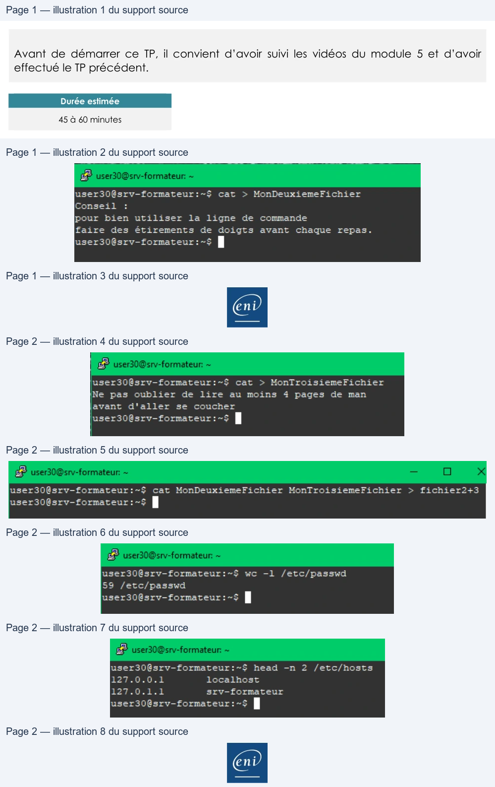

Transcription du document du Drive TSSR. La mise en forme est adaptée au Web ; les compléments IA du portail sont présentés séparément.
Utilisation d'une distribution GNU/Linux
TP du Module 05 – Utiliser des fichiers sous Linux
Avant de démarrer ce TP, il convient d’avoir suivi les vidéos du module 5 et d’avoir
effectué le TP précédent.
Durée estimée
45 à 60 minutes
Dans le module que vous venez de parcourir, vous trouverez les commandes nécessaires
pour répondre aux questions.
1. Créez un nouveau fichier appelé MonDeuxiemeFichier à l'aide de la commande
cat, dont le contenu sera :
Conseil :
pour bien utiliser la ligne de commande
faire des étirements de doigts avant chaque repas.
cat > MonDeuxiemeFichier
Conseil :
pour bien utiliser la ligne de commande
faire des étirements de doigts avant chaque repas.
2. Créez un fichier MonTroisiemeFichier avec cat, contenant le texte :
Ne pas oublier de lire au moins 4 pages de man
avant d'aller se coucher
Page 1/2
© ENI – Tous droits réservés
user30Ësrv-formateur:-$
cat
> MonDeuxiemeFichier
Conseil
:
pour bien
utiliser
la
ligne
de
commande
faire
des étirements
de doigts avant chaque repas.
Utilisation d'une distribution GNU/Linux
cat > MonTroisiemeFichier
Ne pas oublier de lire au moins 4 pages de man
Avant d’aller se coucher
3. Créez un nouveau fichier fichier2+3 par concaténation des deux fichiers qui viennent
d'être créés.
Cat MonDeuxiemeFichier MonTroisiemeFichier > fichier2+3
4. Combien de comptes d'utilisateurs ont été créés sur la machine, sachant que le
fichier contenant les utilisateurs est /etc/passwd et qu'une ligne correspond à un
utilisateur ?
wc -l /etc/passwd
5. Affichez uniquement les 2 premières lignes du fichier /etc/hosts
head -n 2 /etc/hosts
Page 2/2
© ENI – Tous droits réservés
user30Ësrv-formateur:-$
cat
> MonTroisiemeFichier
Ne pas
oublier
de
lire
au moins
4
pages
de man
avant
d'aller
se
coucher
user30@srv—formateur:~$ |
user30@srv-formateur:~§$
cat MonDeuxiemeFichier MonTroisiemeFichier
>
fichier2+3
user30@srv—formateur:~$ |
user30@srv-formateur:-$
we
-1 /etc/passwd
55 /etc/passwd
user30@srv—-formateur:~$ |
user30Ësrv-formateur:-$
head -n
2
/etc/hosts
127.0.0.1
localhost
127.0.1.1
srv-formateur
user308srv-formateur:-$ |
